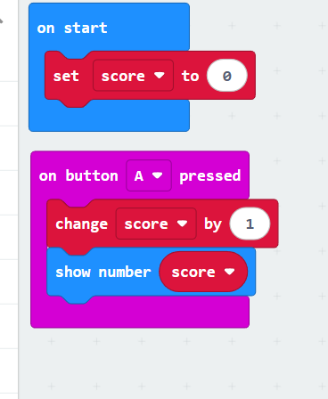
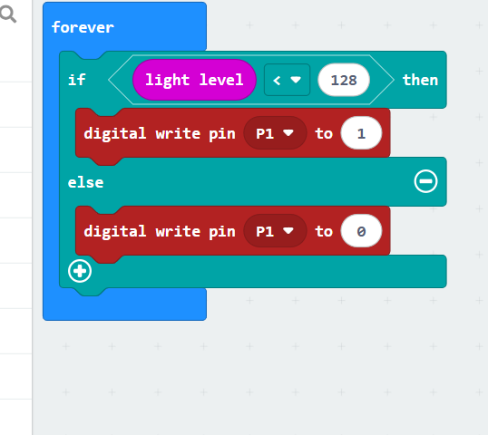

Task 1
What was the issue?
The screen only display once and it don't increase as the time of pressing A
How did you solve it?
1, When Microbit opening, set the variable to a difinite number, for example 0
2, out the block of "displaying the number on the screen" into the "When pressing A"
Share a screenshot of the solution:
Task 2
What was the issue?
The light can't close when the room turn to bright
How did you solve it?
add an order that turn off the light at the situation of "otherwise". That means when the room is bright, the light will turn off automatically
Share a screenshot of the solution:
Task 3
What was the issue?
the possibility of win is too small
How did you solve it?
solution 1, change the rule of win. Changing "the number generated is equal to 5" to "if the nmber generated is less than 5, you will win"
solution 2, change the rule to. if the number generated is even, you will win
Share a screenshot of the solution: